梁筋 mask 当前状态
当前帧没有检测到梁筋，beam_bands=[]；因此 mask 二值图显示 NO BEAM MASK DETECTED，本帧没有发生梁筋过滤。
当前梁筋排除半径为 100.0 mm。钢筋线允许穿过梁筋；只有落入 mask 的最终绑扎点会被过滤。
红色叠加区域是梁筋±10cm图谱排除掩膜，只用于最终绑扎点排除，不删除整条钢筋线。
当前帧梁筋检测 beam_bands：[]；为空时说明本帧未触发梁筋过滤，mask 图会显示 NO BEAM MASK DETECTED。
方案3/4/5/6 当前使用主链行/列峰值线族作为曲线拓扑骨架，不使用 FFT 线族；方案3F/4F/5F/6F 是同算法换 FFT 线族拓扑骨架的对照。
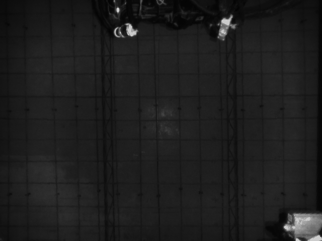

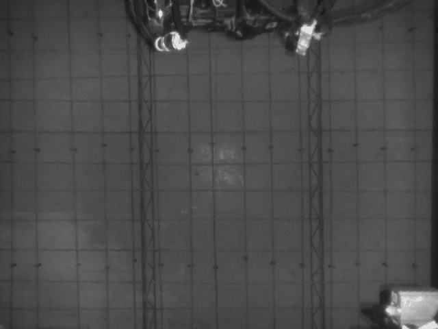
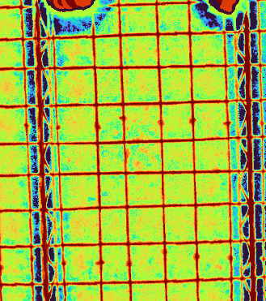
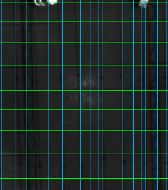
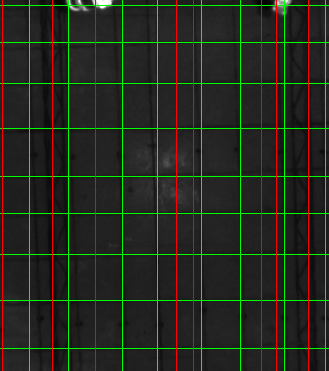
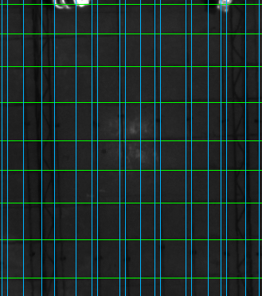
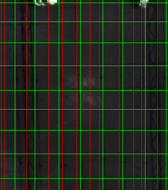
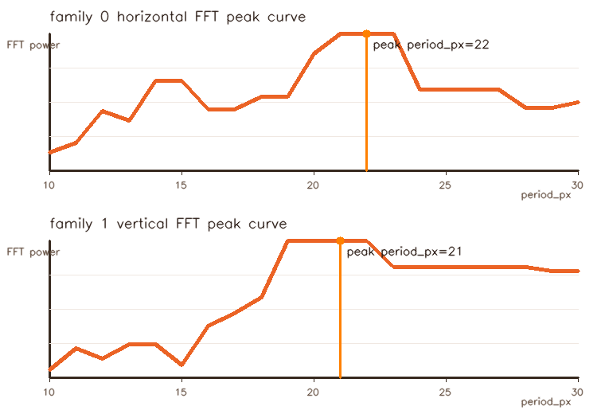
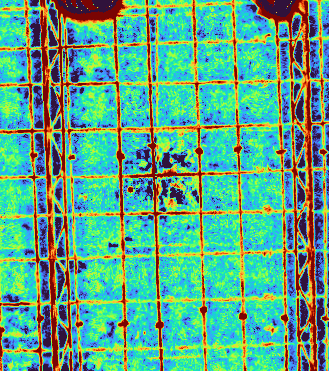
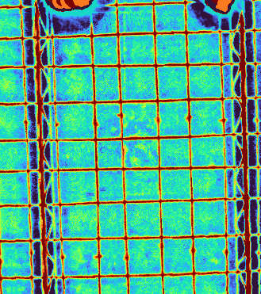

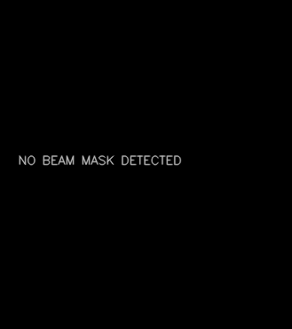
当前帧没有检测到梁筋，beam_bands=[]；因此 mask 二值图显示 NO BEAM MASK DETECTED，本帧没有发生梁筋过滤。
当前梁筋排除半径为 100.0 mm。钢筋线允许穿过梁筋；只有落入 mask 的最终绑扎点会被过滤。
方案3/4/5/6 的曲线不是先语义分割“钢筋实体”，而是在已有行/列峰值线族骨架上沿响应图追局部 ridge。当地板缝、梁筋边缘、TCP 入侵或纹理在响应图上比真实钢筋更强时，贪心或动态规划会被更强响应牵引，曲线就会贴到假 ridge 上。
因此曲线方案现在只作为收束对照，不直接替代主链；报告中的 3F/4F/5F/6F 是把拓扑骨架换成 FFT 峰值后的对照。
离钢筋近时，单根钢筋宽度、交点凸起和线间距占更多像素，profile 峰值分离清楚，深度/红外信噪比也更高。离钢筋远时，钢筋宽度接近少量像素，透视展开插值会把 ridge 变窄或断裂，深度噪声和地板缝强度占比上升，多个峰更容易合并或被假峰替代。
当前帧各方案点数范围为 72 - 72，单帧主链耗时 94.3 ms。
当前 active PR-FPRG 输出，固定透视展开图行/列 profile 峰值，保持 spacing_pruned 后的两组正交直线族。
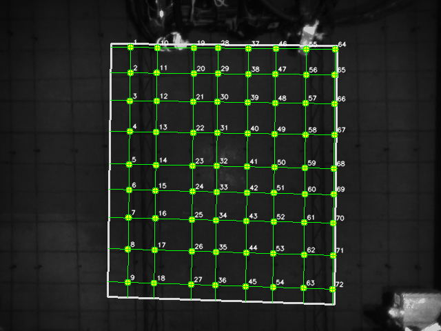
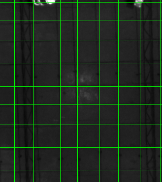
{"elapsed_ms": 5.24, "topology_source": "main_axis_rowcol", "beam_bands": [], "beam_exclusion_margin_mm": 100.0, "beam_filtered_point_count": 0, "curve_metrics": {}}
[{"angle_deg": 0.0, "axis_orientation": "horizontal", "period_estimator": "profile", "estimate_method": null, "period": 22, "phase": 16, "rhos": [5.0, 42.0, 83.0, 128.0, 176.0, 213.0, 254.0, 300.0, 348.0], "line_count": 9, "curve_coverage": null}, {"angle_deg": 90.0, "axis_orientation": "vertical", "period_estimator": "profile", "estimate_method": null, "period": 27, "phase": 13, "rhos": [29.0, 68.0, 122.0, 157.0, 201.0, 240.0, 284.0, 325.0], "line_count": 8, "curve_coverage": null}]
在同一组合响应图上先用 FFT 频域主峰估计当前尺度行/列周期，再做 phase/peak support/spacing 收束；它是方案1的频域对照，不是已废弃的方案2。
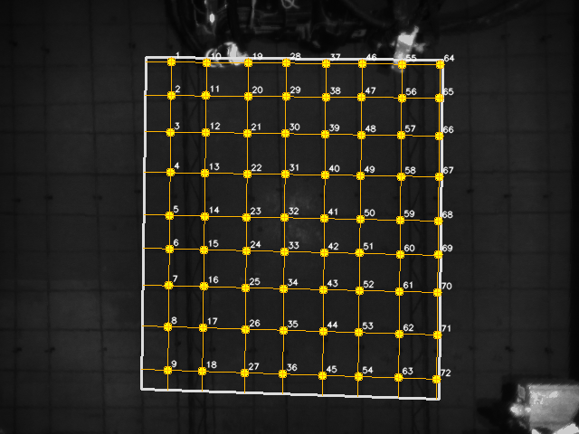
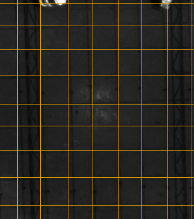
{"elapsed_ms": 5.13, "topology_source": "fft_axis_peaks", "beam_bands": [], "beam_exclusion_margin_mm": 100.0, "beam_filtered_point_count": 0, "curve_metrics": {}}
[{"angle_deg": 0.0, "axis_orientation": "horizontal", "period_estimator": "fft", "estimate_method": "fft", "period": 22, "phase": 16, "rhos": [5.0, 42.0, 83.0, 128.0, 176.0, 213.0, 254.0, 300.0, 348.0], "line_count": 9, "curve_coverage": null}, {"angle_deg": 90.0, "axis_orientation": "vertical", "period_estimator": "fft", "estimate_method": "fft", "period": 21, "phase": 11, "rhos": [29.0, 68.0, 115.0, 157.0, 201.0, 240.0, 284.0, 325.0], "line_count": 8, "curve_coverage": null}]
以当前行/列峰值正交网格为拓扑骨架，每个采样点沿法线独立找局部响应中心；方案3/4/5/6 当前使用主链行/列峰值线族作为曲线拓扑骨架，不使用 FFT 线族。
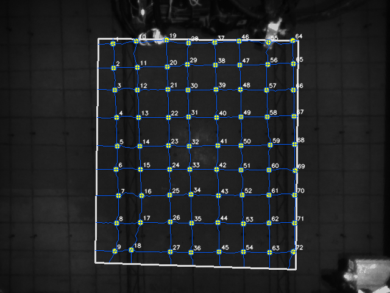
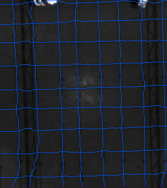
{"elapsed_ms": 25.82, "topology_source": "main_axis_rowcol", "beam_bands": [], "beam_exclusion_margin_mm": 100.0, "beam_filtered_point_count": 0, "curve_metrics": {"coverage_mean": 0.999, "score_mean": 0.899, "abs_offset_mean": 2.783, "abs_offset_p95": 7.4, "wiggle_mean": 0.39}}
[{"angle_deg": 0.0, "axis_orientation": "horizontal", "period_estimator": "profile", "estimate_method": null, "period": 22, "phase": 16, "rhos": [5.0, 42.0, 83.0, 128.0, 176.0, 213.0, 254.0, 300.0, 348.0], "line_count": 9, "curve_coverage": 0.997}, {"angle_deg": 90.0, "axis_orientation": "vertical", "period_estimator": "profile", "estimate_method": null, "period": 27, "phase": 13, "rhos": [29.0, 68.0, 122.0, 157.0, 201.0, 240.0, 284.0, 325.0], "line_count": 8, "curve_coverage": 1.0}]
仍沿法线找 ridge，但用动态规划约束相邻采样点偏移连续；方案3/4/5/6 当前使用主链行/列峰值线族作为曲线拓扑骨架，不使用 FFT 线族。
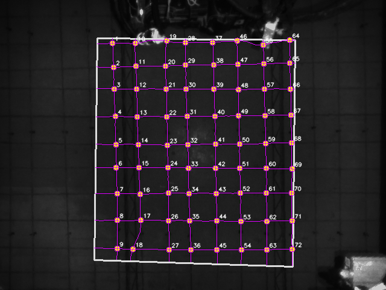
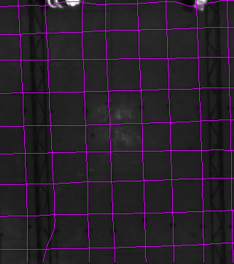
{"elapsed_ms": 35.6, "topology_source": "main_axis_rowcol", "beam_bands": [], "beam_exclusion_margin_mm": 100.0, "beam_filtered_point_count": 0, "curve_metrics": {"coverage_mean": 0.994, "score_mean": 0.89, "abs_offset_mean": 2.751, "abs_offset_p95": 7.6, "wiggle_mean": 0.051}}
[{"angle_deg": 0.0, "axis_orientation": "horizontal", "period_estimator": "profile", "estimate_method": null, "period": 22, "phase": 16, "rhos": [5.0, 42.0, 83.0, 128.0, 176.0, 213.0, 254.0, 300.0, 348.0], "line_count": 9, "curve_coverage": 0.992}, {"angle_deg": 90.0, "axis_orientation": "vertical", "period_estimator": "profile", "estimate_method": null, "period": 27, "phase": 13, "rhos": [29.0, 68.0, 122.0, 157.0, 201.0, 240.0, 284.0, 325.0], "line_count": 8, "curve_coverage": 0.997}]
动态规划分数加入“中间强、两侧弱”的局部 ridge 判断；方案3/4/5/6 当前使用主链行/列峰值线族作为曲线拓扑骨架，不使用 FFT 线族。
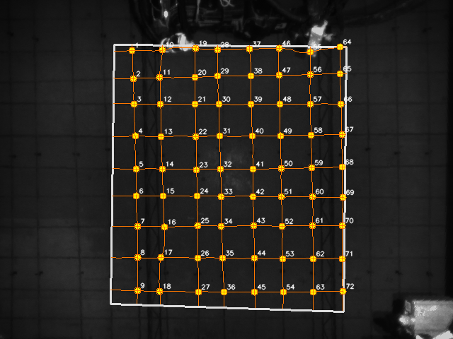
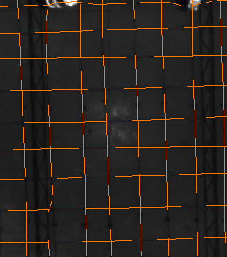
{"elapsed_ms": 45.44, "topology_source": "main_axis_rowcol", "beam_bands": [], "beam_exclusion_margin_mm": 100.0, "beam_filtered_point_count": 0, "curve_metrics": {"coverage_mean": 0.992, "score_mean": 0.881, "abs_offset_mean": 2.611, "abs_offset_p95": 6.6, "wiggle_mean": 0.049}}
[{"angle_deg": 0.0, "axis_orientation": "horizontal", "period_estimator": "profile", "estimate_method": null, "period": 22, "phase": 16, "rhos": [5.0, 42.0, 83.0, 128.0, 176.0, 213.0, 254.0, 300.0, 348.0], "line_count": 9, "curve_coverage": 0.992}, {"angle_deg": 90.0, "axis_orientation": "vertical", "period_estimator": "profile", "estimate_method": null, "period": 27, "phase": 13, "rhos": [29.0, 68.0, 122.0, 157.0, 201.0, 240.0, 284.0, 325.0], "line_count": 8, "curve_coverage": 0.992}]
沿当前底层组合响应做同拓扑曲线收束，保留为对照候选；方案3/4/5/6 当前使用主链行/列峰值线族作为曲线拓扑骨架，不使用 FFT 线族。
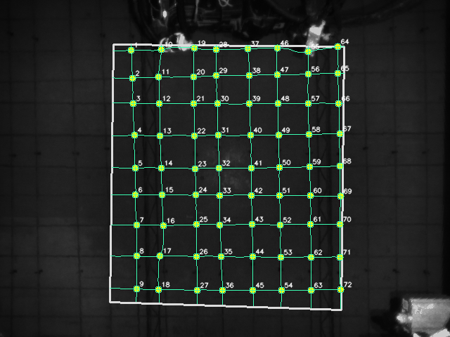
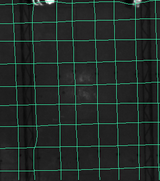
{"elapsed_ms": 58.88, "topology_source": "main_axis_rowcol", "beam_bands": [], "beam_exclusion_margin_mm": 100.0, "beam_filtered_point_count": 0, "curve_metrics": {"coverage_mean": 0.992, "score_mean": 0.881, "abs_offset_mean": 2.611, "abs_offset_p95": 6.6, "wiggle_mean": 0.049}}
[{"angle_deg": 0.0, "axis_orientation": "horizontal", "period_estimator": "profile", "estimate_method": null, "period": 22, "phase": 16, "rhos": [5.0, 42.0, 83.0, 128.0, 176.0, 213.0, 254.0, 300.0, 348.0], "line_count": 9, "curve_coverage": 0.992}, {"angle_deg": 90.0, "axis_orientation": "vertical", "period_estimator": "profile", "estimate_method": null, "period": 27, "phase": 13, "rhos": [29.0, 68.0, 122.0, 157.0, 201.0, 240.0, 284.0, 325.0], "line_count": 8, "curve_coverage": 0.992}]
以 FFT 行/列峰值正交网格为拓扑骨架，每个采样点沿法线独立找局部响应中心；本卡使用 FFT 线族拓扑骨架。
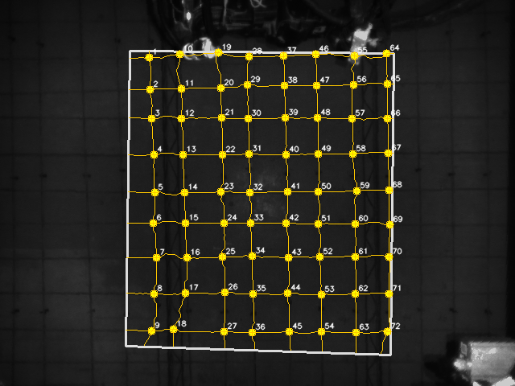
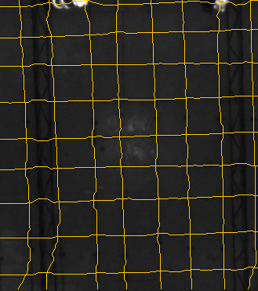
{"elapsed_ms": 25.92, "topology_source": "fft_axis_peaks", "beam_bands": [], "beam_exclusion_margin_mm": 100.0, "beam_filtered_point_count": 0, "curve_metrics": {"coverage_mean": 0.999, "score_mean": 0.898, "abs_offset_mean": 2.888, "abs_offset_p95": 7.8, "wiggle_mean": 0.402}}
[{"angle_deg": 0.0, "axis_orientation": "horizontal", "period_estimator": "fft", "estimate_method": "fft", "period": 22, "phase": 16, "rhos": [5.0, 42.0, 83.0, 128.0, 176.0, 213.0, 254.0, 300.0, 348.0], "line_count": 9, "curve_coverage": 0.997}, {"angle_deg": 90.0, "axis_orientation": "vertical", "period_estimator": "fft", "estimate_method": "fft", "period": 21, "phase": 11, "rhos": [29.0, 68.0, 115.0, 157.0, 201.0, 240.0, 284.0, 325.0], "line_count": 8, "curve_coverage": 1.0}]
以 FFT 行/列峰值正交网格为拓扑骨架，沿法线找 ridge 并用动态规划约束相邻采样点偏移连续；本卡使用 FFT 线族拓扑骨架。
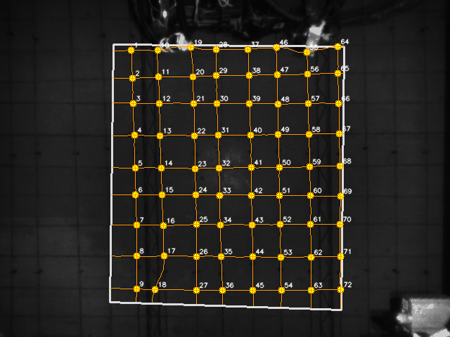
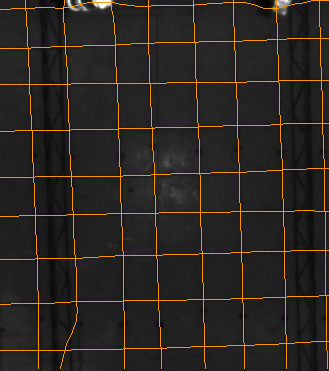
{"elapsed_ms": 36.06, "topology_source": "fft_axis_peaks", "beam_bands": [], "beam_exclusion_margin_mm": 100.0, "beam_filtered_point_count": 0, "curve_metrics": {"coverage_mean": 0.994, "score_mean": 0.889, "abs_offset_mean": 2.882, "abs_offset_p95": 8.0, "wiggle_mean": 0.051}}
[{"angle_deg": 0.0, "axis_orientation": "horizontal", "period_estimator": "fft", "estimate_method": "fft", "period": 22, "phase": 16, "rhos": [5.0, 42.0, 83.0, 128.0, 176.0, 213.0, 254.0, 300.0, 348.0], "line_count": 9, "curve_coverage": 0.992}, {"angle_deg": 90.0, "axis_orientation": "vertical", "period_estimator": "fft", "estimate_method": "fft", "period": 21, "phase": 11, "rhos": [29.0, 68.0, 115.0, 157.0, 201.0, 240.0, 284.0, 325.0], "line_count": 8, "curve_coverage": 0.997}]
以 FFT 行/列峰值正交网格为拓扑骨架，动态规划分数加入“中间强、两侧弱”的局部 ridge 判断；本卡使用 FFT 线族拓扑骨架。
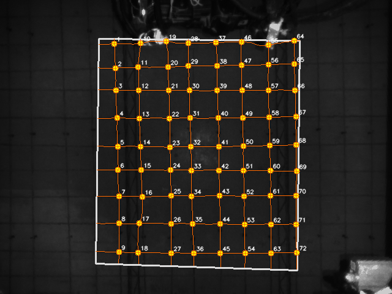
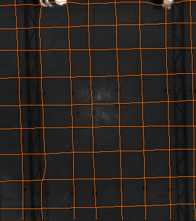
{"elapsed_ms": 44.81, "topology_source": "fft_axis_peaks", "beam_bands": [], "beam_exclusion_margin_mm": 100.0, "beam_filtered_point_count": 0, "curve_metrics": {"coverage_mean": 0.992, "score_mean": 0.881, "abs_offset_mean": 2.749, "abs_offset_p95": 8.0, "wiggle_mean": 0.049}}
[{"angle_deg": 0.0, "axis_orientation": "horizontal", "period_estimator": "fft", "estimate_method": "fft", "period": 22, "phase": 16, "rhos": [5.0, 42.0, 83.0, 128.0, 176.0, 213.0, 254.0, 300.0, 348.0], "line_count": 9, "curve_coverage": 0.992}, {"angle_deg": 90.0, "axis_orientation": "vertical", "period_estimator": "fft", "estimate_method": "fft", "period": 21, "phase": 11, "rhos": [29.0, 68.0, 115.0, 157.0, 201.0, 240.0, 284.0, 325.0], "line_count": 8, "curve_coverage": 0.992}]
以 FFT 行/列峰值正交网格为拓扑骨架，沿当前底层组合响应做同拓扑曲线收束；本卡使用 FFT 线族拓扑骨架。
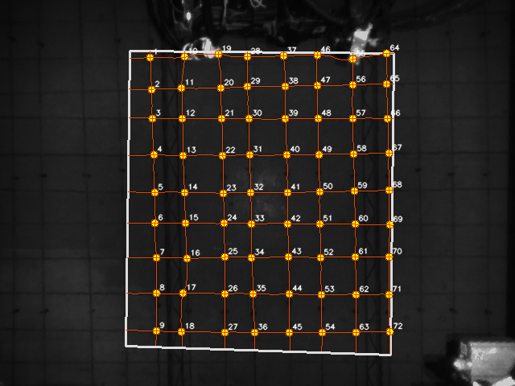
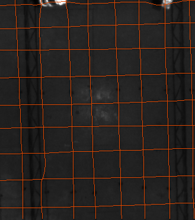
{"elapsed_ms": 47.06, "topology_source": "fft_axis_peaks", "beam_bands": [], "beam_exclusion_margin_mm": 100.0, "beam_filtered_point_count": 0, "curve_metrics": {"coverage_mean": 0.992, "score_mean": 0.881, "abs_offset_mean": 2.751, "abs_offset_p95": 8.0, "wiggle_mean": 0.05}}
[{"angle_deg": 0.0, "axis_orientation": "horizontal", "period_estimator": "fft", "estimate_method": "fft", "period": 22, "phase": 16, "rhos": [5.0, 42.0, 83.0, 128.0, 176.0, 213.0, 254.0, 300.0, 348.0], "line_count": 9, "curve_coverage": 0.992}, {"angle_deg": 90.0, "axis_orientation": "vertical", "period_estimator": "fft", "estimate_method": "fft", "period": 21, "phase": 11, "rhos": [29.0, 68.0, 115.0, 157.0, 201.0, 240.0, 284.0, 325.0], "line_count": 8, "curve_coverage": 0.992}]